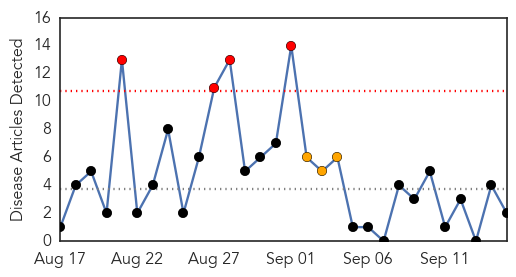
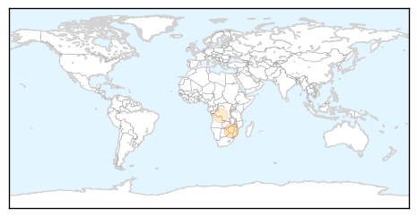
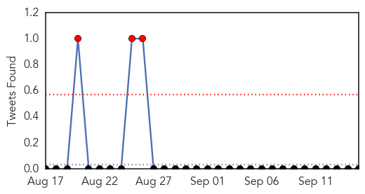

Measles
30-Day Web Trend
4 alerts, 3 warnings

30-Day Twitter Trend
0 alerts, 0 warnings

Article Locations
Article Confidences

Top Articles:
Top Tweets:
-
No tweets found for Sep 15, 2015
MERS
30-Day Web Trend
0 alerts, 12 warnings

30-Day Twitter Trend
7 alerts, 12 warnings

Article Locations

Article Confidences

Top Articles:
Top Tweets:
- 0.664
- AFD Blog `Saudi MOH Reports 3 New MERS Cases' MERS-CoV http://t.co/bp0bfKNtpW